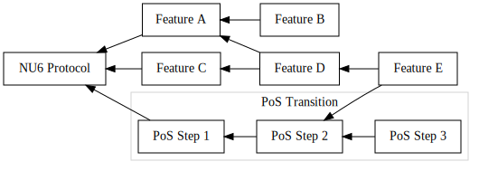
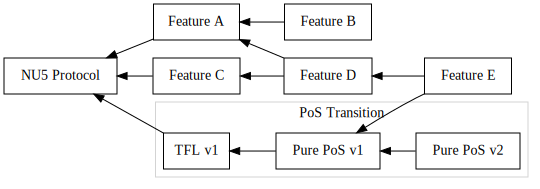
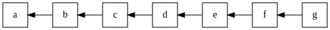
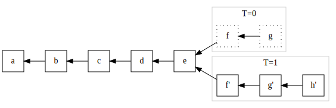

A Trailing Finality Layer for Zcash
This book introduces and specifies a Trailing Finality Layer for the Zcash network.
This design augments the existing Zcash Proof-of-Work (PoW) network with a new consensus layer which provides trailing finality. This layer enables transactions included via PoW to become final which assures that they cannot be reverted by the protocol. This enables safer and simpler wallets and other infrastructure, and aids trust-minimized cross-chain bridges. This consensus layer uses Proof-of-Stake consensus, and enables ZEC holders to earn protocol rewards for contributing to the security of the Zcash network. By integrating a PoS layer with the current PoW Zcash protocol, this design specifies a hybrid consensus protocol dubbed PoW+TFL.
The rest of this introductory chapter is aimed at a general audience interested in the context of this proposal within Zcash development, status and next steps, motivations, a primer on finality, and tips to get involved.
A Path to Proof-of-Stake Zcash
The TFL design provides a possible first step in transitioning Zcash to a PoS protocol. Here we describe how a transition to PoS relates to "the Zcash roadmap" and how TFL fits into one approach to a PoS transition.
The Zcash Tech-Tree
There are multiple developer orgs working on different proposed features for Zcash. Some of these involve multiple large distinct upgrade steps, and several of these steps depend on other such steps. This could be represented as a directed acyclic graph. We have begun referring to this space of possible future improvements as the Zcash Tech-Tree, taking inspiration from an analogous concept in gaming.1
We envision a proof-of-stake transition path as one of the potential paths within this tech-tree which is the primary protocol focus of this proposal. An example visualization of this Zcash Tech-Tree might look like this:

A Proof-of-Stake Transition Path
Given that context, we envision a path within the Zcash Tech-Tree for transitioning Zcash to PoS. At the top level we propose that this path contain at least two major milestones:
- Transitioning from current Zcash NU5 PoW protocol to a PoW/PoS hybrid consensus protocol dubbed PoW+TFL.
- Transitioning from PoW+TFL to pure PoS protocol.
After this transition to pure PoS, there are likely to be future improvements to the PoS protocol, or the consensus protocol more generally. This TFL book focuses almost exclusively on the first step in this sequence.
Our primary motivation for proposing (at least) two steps is to minimize disruption to usability, safety, security, and the ecosystem during each step.
This book primarily focuses this first step: the transition to PoW+TFL. To understand the specific goals for that, see Design Goals.
With this approach, the Zcash Tech Tree with the TFL approach might look something like this:

Why Two Steps?
One question we've gotten in proposing this approach is why take a two-step process with an intermediate hybrid consensus protocol, rather than a single transition directly to a PoS protocol?
Here's how we think about those trade-offs:
Considering Single Transition (vs Hybrid Multi-Step)
Pros
- We already understand the current PoW protocol well, and if we transition to an existing proven PoS protocol, then we could skip the complexity of an intermediate hybrid stage.
- The node implementation might be simpler.
- Explaining to people what is happening might be simpler. Something like “Zcash has been PoW since it launched, but on $DATE (e.g. at block height X) it will switch to PoS.”
- Given that the issuance in a given time period is bounded by the supply curve, the full amount that was previously allocated to mining rewards becomes immediately available for staking rewards at the switch-over, rather than having to share this amount between mining and staking during the hybrid stage.
Cons
- If there is any unforeseen show-stopping problem in the new protocol or the transition process, we’d have to react to a network-wide issue.
- It may be more likely to cause ecosystem disruption; unforeseen differences between PoW and PoS might cause various kinds of snags or papercuts throughout the ecosystem, and these would all pop up around the same time, which may lead to a loss of confidence/retention/adoption or at the very least inconvenience many users for some time.
- Losing miners: since the transition would be all at once, we may lose some number of miners, who are participants and users in the ecosystem. Miners may leave prior to the transition in order to take care of their own needs. If there is some show-stopper in the transition, one possible short-term mitigation would be to fall back on PoW which is well known, but if we’ve lost most miners, that may no longer be viable.
Considering Hybrid Multi-Step approach (vs Single-Step):
Note: TFL is one instance of a multi-step approach.
Pros
- We can hopefully be less disruptive across the ecosystem so that there are fewer snags and disruptions with each step.
- If there is a show-stopping flaw in any step, the fall-back possibility seems more plausible. For example, if there is a show-stopper when transitioning from PoW to PoW+TFL, falling back to pure PoW seems more feasible, since both protocols rely on mainnet PoW infrastructure, so those participants will be present in either case.
- Retaining miners during a hybrid phase: while it is true that a hybrid protocol will lower miner revenue (since we aim to maintain the issuance schedule constraints), there is also more possibility and likelihood of keeping some of these users engaged. For example, they may begin participating in staking services (either as delegators or as infrastructure operators). If that is successful, then they’re also more likely to remain engaged in the subsequent transition to pure PoS.
- This general approach was demonstrated successfully by Ethereum, which is the largest or second largest cryptocurrency network for several important metrics (e.g. market cap, fees paid, user and developer activity, …). So we know this can be done well without disruptions.
Cons
- The intermediate hybrid step will be a more novel and less well understood protocol. (It will necessarily be fairly different from Ethereum’s Beacon chain era.)
- Consensus nodes will be more complex, involving logic for both sub-protocols as well as their integration. (Ideally this complexity can be modularized so that the nodes are easier to maintain and improve.)
- This may be more complicated to explain to current and potential new users. Something like “Zcash launched as PoW, and on $DATE (block height X) it will transition to a hybrid system, then later to a pure PoS system.”
- The available issuance must be shared between mining and staking rewards during the hybrid stage. The security of the PoW layer and of the PoS layer during this stage is partially dependent on the funds allocated to issuance for each protocol, and it is not yet clear to what extent splitting rewards would affect overall security.
Footnotes
See Wikipedia's Technology Tree - History section for details.
Trailing Finality Layer in a Nutshell
The hybrid PoW/PoS protocol proposed in this book is similar to today's Zcash NU5 protocol with the addition of a Trailing Finality Layer:
TODO: Add graphic showing nodes connected to each other in the p2p protocol. Each node has two parts: PoW and TFL. Each part has a distinct connection to the neighbors of the same part, so node A's "PoW" connects to node B's "PoW", node A's "TFL" connects to node B's "TFL". Finally, we want some way to visualize that all of the PoW nodes and connections were "pre-existing" and that the TFL pieces are a "new layer".
The Zcash Trailing Finality Layer refers to a new subprotocol of a new hybrid PoW/PoS protocol, which we refer to as PoW+TFL. This subprotocol introduces assured finality for the Zcash blockchain, ensuring that final blocks (and the transactions within them) may never be rolled back.
We use the term "layer" because we can understand this design as introducing a new layer to the Zcash network, making only minimal changes to the existing network and consensus protocol. This modular separation is present in the consensus rules, the network protocol, and the code architecture.
Why Should Users Care?
There are three categories of users this proposed TFL protocol would impact:
Current ZEC Users
Existing ZEC users who are primarily concerned with storing or receiving ZEC, whether private or transparent may benefit from this change in the short or medium term, because it may help lower delay times for some services, such as exchange deposits. As exchanges come to rely on the new finality guarantee, they can often reduce their deposit wait times. Other services with similar confirmation-depth-based wait times can be improved in a similar way to lower these wait times. Other than this improvement, these users should notice no other changes.
In the longer term, providing finality will be useful in establishing trust-minimized bridges to other blockchains. We anticipate this can enable better connecting ZEC to the Defi ecosystem, and with the introduction of Zcash Shielded Assets, this can enable other assets to connect to the Zcash shielded pool.
Proof-of-Stake Users
Users who are interested in providing finality infrastructure, or users who want to delegate ZEC towards finality, will be able to earn rewards from the protocol for doing so, while also taking on some risk to their funds (to prevent malicious abuse of the protocol). This may be an important new category of ZEC users and use cases.
Miners
Miners who provide Proof-of-Work security will necessarily see some reduction in their block rewards, since this proposal maintains the same issuance schedule and supply cap of ZEC while also spending some rewards on finality.
Important Note: The proportion and details of how much mining rewards will be impacted, and conversely how much finality/PoS providers will earn, are not yet specified in this proposal.
Why is this a Good Approach to a PoS Transition?
This design is appealing as a safer first step in transitioning the Zcash protocol for multiple reasons:
It Enables Proof-of-Stake Mechanisms Conservatively
This transition would enable PoS mechanisms, including the ability to operate PoS infratructure and delegate ZEC towards those providers to earn protocol rewards. While all PoS transitions would accomplish this, this approach does so in a conservative manner: it introduces these mechanics while striving to minimize the impact on existing use cases and protocol security.
In a sense, we can think of this approach as enabling the Zcash community to "dip our toes in the PoS waters" rather than diving in. If the results pan out well, it gives us confidence for further transitions. If we discover challenges, flaws, or risks, we anticipate their impact will be more limited since this is a more cautious transition step.
Minimal Use-Case Disruption
In many cases, existing products, services, and tools can continue using the mainnet chain with no changes to code assuming they rely on existing consensus nodes. We view this as a major benefit which allows Zcash's existing user network effect to continue safely unperturbed.
There will be certain narrow exceptional areas if those products, services, or tools need to be precise in areas where the protocol has changed, such as mining/staking reward calculations, transaction formats (in particular any new PoS-related fields or logic), or chain rollback logic.
Modular Design
By conceptualizing the TFL as a distinct "layer" or subprotocol, the consensus rules can be described in terms of two consensus subprotocols, one embodying most of the current consensus logic of Zcash and another the TFL. These protocols interact through a hybrid construction. See Design at a Glance to learn more about these distinct subprotocols.
Reasoning about the whole protocol can leverage analysis and understanding of each subprotocol and the hybrid construction somewhat independently due to this modular design. Note that although this design is modular, the hybrid construction may require modifications to the [PoW] and/or [PoS] subprotocols to protect safety and liveness properties. Nevertheless, the modularity still improves analysis and reasoning compared to a monolithic design.
Finally, since one subprotocol is very similar to the existing Zcash NU5 protocol, this lessens risk that the consensus properties within that subprotocol compromise current NU5 properties.
Modular Implementation
In addition to the other benefits of protocol design modularity, we anticipate actual implementations can realize this modularity in code. This can help makes implementations more robust, easier to maintain, and more interoperable.
For example, we can envision a standardized interface between PoW & TFL consensus components, enabling different development teams to provide these different components and for "full node" packagers to mix and match them. This is somewhat reminiscent of Ethereum's execution/consensus layer separation which we believe has shown great success in implementation team and product diversity.
Cracking the Nutshell
In the rest of the introductory section of this book, we describe the status and next steps for the TFL proposal, provide a motivation for finality, and suggestions for getting involved.
Status and Next Steps
This is an early and incomplete protocol design proposal. It has not been well vetted for feasibility and safety. It has not had broad review from the Zcash community, so its status on any Zcash roadmap is undetermined.
Current Components
This Book
This book is intended to become both a high-level overview and introduction to TFL, and a full specification.
Crosslink
The current heart of the design work is an in-progress hybrid consensus protocol construction called Crosslink. This is an in-development realization of the TFL design goals. The essential design details are specified, along with a security argument for its liveness. The security argument for its safety is in progress.
The draft specification and security arguments of Crosslink currently live on this hackmd.
simtfl
We've begun creating a simulator called simtfl which we will use to model security and abstract performance concerns. Its development is tracked at https://github.com/zcash/simtfl.
Major Missing Components
- PoS subprotocol selection,
- Issuance and supply mechanics, such as how much ZEC stakers may earn,
- Integrated Zcash transaction semantics,
- A transition plan from current Zcash mainnet to this protocol design,
- ZIPs specifying the above to the level of specificity required by ZIPs,
- Security and safety analyses,
- Economic analyses.
This list may be incomplete, and as the design matures the need for major new components may be revealed.
Next Steps
This design proposal is being developed by Electric Coin Company as the first major milestone in our focus of deploying Proof-of-Stake to the Zcash protocol. Our rough near-term plan for this proposal is as follows:
- Complete the Crosslink description.
- Complete core security arguments for Crosslink.
- Define the Major Missing Components above, including considerations such as issuance mechanics and Proof-of-Stake mechanisms.
- Complete auxillary security arguments and analyses, such as specific attack scenarios, game-theoretic security, and so forth.
- Mature
simtflto analyze all cases of interest. - Follow the general Zcash process for proposal/review/refinement, including proposing one or more ZIPs.
- Follow the general Zcash governance process for proposal review and refinement.
- If accepted, productionize the proposal in ECC products and collaborate with other implementors who implement the proposal.
- Celebrate when and if the proposal is activated on Mainnet. 🎉
The fine-grained day-to-day goals and tasks for this project are present in the Zcash Developers Hub in the TFL-focused DAG.
Please also see Get Involved if you are interested in tracking this progress more closely, or in contributing.
Motivating Finality
In Zcash currently, consensus relies solely on PoW, which only provides probabilistic finality, rather than assured finality.1 This style of consensus does not offer a guarantee that any given block may not be rolled back which may invalidate the transactions it contains. Instead, the probability that a block may be rolled back decreases as more blocks are mined subsquently on top of it.2
Let's walk through an example of how Zcash's current PoW with probabilistic finality can impede important use cases. Consider a PoW node which sees this block sequence at time T=0:

When should a user, wallet, or other system choose to act based on a transaction in a block?
For this example, let's assume a bridging system may have received a deposit for ZEC in block f and issued a corresponding number of proxy tokens on a different network.
At a later time, T=1, this same node may see a longer PoW chain which invalidates some previously seen blocks:

The node has observed a longer chain ending at block h', so PoW consensus calls for that new sequence to be treated as consensus. The previously seen blocks f and g are no longer part of the consensus history, and have been rolled back.
Impact of the Rollback
In our example, the bridging system acted in response to a transaction in the original block f at T=0. If the new sequence ending at h' no longer contains the deposit to the bridging system, the integrity of the bridge has been violated3; the associated proxy tokens may have already been used in a complex chain of Defi applications or deposited onto an exchange and sold, which would make any recovery impossible. The proxy tokens on the other network no longer correspond to the correct amount of ZEC on the Zcash network.
Rollback Complications
This example demonstrates how a lack of assured finality can impede many useful real-world scenarios. In practice, systems and services which need greater assurances wait for more block confirmations.
This has several drawbacks:
- it doesn't remove the vulnerability, it only reduces the likelihood;
- different applications/services may require different block depths, making it difficult to compose or chain together different applications/services;
- different block depth policies potentially confuse users, i.e. "why do I have to wait one hour for my deposit in this exchange, but only 30 minutes on that exchange?"; and
- it introduces a long delay which inhibits many useful applications.
In addition to these user-facing and economic drawbacks, correctly handling rollbacks makes the code for nodes, wallets, and other infrastructure more complex. Worse still, many systems may not have correct behavior for rollbacks at different depths, and since large rollbacks are rarer, these implementation flaws may not surface until there is a large rollback. While a large rollback would be disruptive all by itself, it becomes even worse when previously undiscovered bugs exacerbate the situation.
Trailing Finality Benefits
Trailing finality extends the existing PoW consensus so that older blocks become final, assuring they cannot be rolled back, and by extension neither can any of the transactions they contain.
This directly addresses the first two flaws above: it completely removes the vulnerability, and it ensures all systems that need finality behave consistently with each other.
As for delay, trailing finality also introduces delay since final blocks "trail behind" the most recent PoW blocks. This can be an improvement for some applications, depending on their latency requirements. For example, if the delay to finality averages around 10 minutes, then this would enable an improvement for an exchange that requires 60 minutes of PoW blocks for a deposit. On the other hand, it would not be an improvement for an application that needs finality faster than 10 minutes.
Finally, implementations can be simplified by relying on the guarantee of finality. For example, a wallet can describe any transaction as pending or final, and does not need to provide difficult and potentially confusing UX (and the supporting database sophistication) for handling rollbacks.
Footnotes
Throughout this book, when we say finality or final without other qualifiers, we specifically are referring to assured finality or a assured final block. Where we call out probabalistic finality we always use that qualifier.
The estimated probability of a rollback relies on a variety of PoW security assumptions, and can be violated in various conditions, such as in mining efficiency breakthroughs, compromises of the PoW challenge algorithm (e.g. hash function collision resistance failure), difficulty-adjustment-algorithm failures, sudden/surprise mining capacity increases, and so on. So the estimated probability can be violated in potential "black swan" events.
This discussion simplifies consideration of transaction rollback vs block rollback. When a block is rolled back, it is possible for some of the transactions contained in it to appear in new canonical blocks. The conditions when this can occur vs when it cannot are multifaceted and also subject to malicious influence, so for simplicity we assume all transactions within a rolled-back block are also rolled back.
Get Involved
We welcome contributions!
There are a variety of ways to contribute to this project:
Github
If you have a GitHub account, you can get hands-on via the GitHub repository for this book, including:
- Ask a Question - all questions welcome from basics to in-depth.
- Suggest an Improvement to the content: anything from typo fixes to major design change proposals.
- Report Rendering / Infrastructure Issues in case you're having trouble reading the content, viewing diagrams, rendering on your own computer, etc…
Zcash Forum
The Zcash Forum is a hangout for many Zcash enthusiasts. This is a good spot for more open-ended discussion about this design proposal, alternatives, and other developments in Zcash.
Zcash R&D Discord
You can catch us on the Zcash R&D Discord in this #proof-of-stake channel.
Zcash Arborist Calls
The Zcash Arborist Calls are bi-weekly Zcash protocol development calls, where proposals like this are discussed. Feel free to come lurk, ask questions, or provide feedback or suggestions.
Terminology
This book relies on the following terminology. We strive to keep these definitions as precise as possible and their definitions may deviate from uses elsewhere.
Definitions are sorted alphabetically.
Terms
Assured Finality: A protocol property that assures that transactions cannot be reverted by that protocol. As with all protocol guarantees, a protocol assumes certain conditions must be met. A transaction may either be final or not: transactions which are not final may not become final, whereas once transactions do achieve finality they retain that property indefinitely (so long as protocol requirements are met).
Importantly, it is not feasible for any protocol to prevent reversing final transactions "out of band" from the protocol, such as if a sufficiently large and motivated group of users forks the network to include a specific new validity rule reverting transactions. In some cases this might be desirable, for example to mitigate exploitation of a security flaw. We are investigating the implications for governance and how to incorporate such situations into our security model. In any case, for this reason we eschew the term "absolute finality" sometimes used in technical discussions about consensus protocols.
Consensus Subprotocols: The PoW and PoS subprotocols in PoW+TFL or other hybrid protocols.
Crosslink: A hybrid construction consensus protocol striving to implement the TFL design goals. See Status and Next Steps: Current Components for current status.
Final: A protocol property of transactions. In this book, this always implies assured finality, in contrast to concepts like "probabilistic finality" provided by PoW.
Hybrid Consensus: A consensus protocol that integrates more than one consensus subprotocol. PoW+TFL is an instance of a hybrid protocol integrating PoW and PoS protocols.
Hybrid Construction: The design component of a hybrid consensus which specifies how to integrate subprotocols and what modifications, if any, those subprotocols need to be safely integrated. Examples include Crosslink and Snap-and-Chat.
Liveness: The property of a distributed protocol which ensures that the protocol may progress provided liveness requirements are met. TODO: Fix this definition, which begs the question by failing to define "progress".
NU5: The Zcash consensus protocol as of NU5.1
Objective Validity: A validity property of a protocol history (such as a ledger) which can be computed purely from that history with no other context. Objective validity is needed to define consensus rules that will lead to the same protocol state being eventually agreed on by all nodes.
Proof-of-Stake: A PoS protocol achieves consensus on transaction status by taking into account the weighting of staking tokens. PoS protocols exist under a large umbrella and may or may not provide assured finality or other properties this design requires of TFL.
Proof-of-Work: A PoW protocol uses Nakamoto consensus pioneered by Bitcoin. The PoW subprotocol within PoW+TFL is a different consensus protocol from NU5 and encompasses more than narrow Nakamoto PoW consensus, including transaction semantics such as for shielded transfers.
PoW+TFL: the overall complete, integrated consensus protocol specified in this book.
Safety: The property of a distributed protocol that guarantees a participant may safely rely on a consistent local state, provided safety requirements are met. TODO: Fix this definition.
simtfl: a protocol simulator for analyzing TFL security and abstract performance. Development lives at https://github.com/zcash/simtfl. See Status and Next Steps: Current Components for current status.
Snap-and-Chat: A hybrid construction consensus protocol introduced in Ebb-and-Flow Protocols.
TFL: The Trailing Finality Layer subprotocol within PoW+TFL. This is a new PoS subprotocol which provides assured finality for Zcash.
Trailing Finality: A protocol property wherein transactions become final some time after first appearing in PoW blocks.
ZIP: a Zcash Improvement Proposal is the protocol development process the Zcash community uses to safely define potential protocol improvements. See https://zips.z.cash.
TODO: Clarify the distinctions between PoW (general consensus), NU5 which includes transaction semantics, and the PoW component of PoW-TFL. These distinctions deserve unique terms.
Footnotes
If new consensus changes are deployed to Zcash mainnet prior to PoW+TFL design finalization, this design must be updated to refer to the new delta (e.g. by reanalyzing all changes against NU6 or NU7, etc…)
Design Overview
This design augments the existing Zcash Proof-of-Work (PoW) network with a new consensus layer which provides trailing finality, called the Trailing Finality Layer (TFL).
This layer enables blocks produced via PoW to become final which ensures they may never be rolled back. This enables safer and simpler wallets and other infrastructure, and aids trust-minimized cross-chain bridges.
This consensus layer uses a finalizing Proof-of-Stake (PoS) consensus protocol, and enables ZEC holders to earn protocol rewards for contributing to the security of the Zcash network. By integrating a PoS layer with the current PoW Zcash protocol, this design specifies a hybrid consensus protocol.
The integration of the current PoW consensus with the TFL produces a new top-level consensus protocol referred to as PoW+TFL.
In the following subchapters we introduce the Design at a Glance, then provide an overview of the major components of the design.
Following this overview chapter, we proceed into a detailed Protocol Specification (TODO).
Design Goals
Here we strive to lay out our high level TFL design goals.
Goals, Design, and Trade-offs
Here we lay out ideal goals. As we develop a complete design, we are likely to inevitably encounter trade-offs some of which may preclude achieving the full idealized goals. Wherever possible, we motivate design decisions by these goals, and when goals are impacted by trade-offs we describe that impact and the rationale for the trade-off decision.
For example, one ideal user experience goal below is to avoid disruption to existing wallets. However, the Crosslink construction may require wallets to to alter their context of valid transactions differently from the current NU5 protocol.
User Experience and Use Case Goals
We strive to start our protocol design process from user experience (UX) and use case considerations foremost, since at the end of the day all that matters in a protocol is what user needs it meets and how well.
- All currently supported wallet user experience should continue to operate seamlessly without change during or after protocol transitions. This covers the use of addresses, payment flow, transfers, ZEC supply cap and issuance rate, backup/restore, and other features users currently rely on.
- There must be no security or safety degradation due to wallet user behavior introduced by PoS transitions, assuming users follow their current behaviors unchanged and continue to use the same cognitive model of the impacts of their behaviors. This goal encompasses all of security and safety, including privacy and transparency or more explicit disclosures.
- The protocol should enable users of shielded mobile wallets to delegate ZEC to PoS consensus providers and earn a return on that ZEC coming via ZEC issuance or fees. Doing this may expose users to a risk of loss of delegated ZEC (such as through “slashing fees”). The protocol must guarantee that PoS consensus providers have no discretionary control over such delegated funds (including that they cannot steal those funds).
- For any hybrid PoW/PoS protocol (including the PoW+TFL protocol we’re proposing), the process and UX of mining remains unchanged except that the return on investment may be altered. This is true both of consensus level block miners (ie mining pools and solo miners) and mining pool participants.
- Any hybrid PoW/PoS protocol (including PoW+TFL) block explorers will continue to function with the same UX through transitions in-so-far as displaying information about transactions, the mempool, and blocks.
- Block explorers and other network metrics sites may require UX changes with respect to mining rewards and issuance calculations.
- Network metrics sites may require UX changes with respect to the p2p protocol or other network-specific information.
- Users can rely on assured finality with an expected time-to-finality of <30m.1
Developer Experience Goals
For a full PoS transition, ecosystem developers for products such as consensus nodes, wallets, mining services, chain analytics, and more will certainly need to update their code to support transitions. However, we carve out a few goals as an exception to this for this category of users:
- Wallet developers should not be required to make any changes through protocol transitions as long as they rely solely on the lightwalletd protocol or a full node API (such as the zcashd RPC interface).
- For any hybrid PoW/PoS protocol (including PoW+TFL), mining pools and miners should not be required to make any software or protocol changes as long as they rely on zcashd-compatible GetBlockTemplate. One exception to this is software that bakes in assumptions about the block reward schedule, rather than relying on GetBlockTemplate solely.
Safety, Security, and Privacy Goals
Zcash has always had exemplary safety, security, and privacy, and we aim to continue that tradition:
- For any hybrid PoW/PoS protocol (including PoW+TFL), the cost-of-attack for a 1-hour rollback should not be reduced, given a “reasonably rigorous” security argument.
- For any hybrid PoW/PoS protocol (including PoW+TFL), the cost-of-attack to halt the chain should be larger than the 24 hour revenue of PoW mining rewards, given a “reasonably rigorous” security argument.
TODO: privacy, pure-PoS security goals.
Design Conservatism Goals
We want to follow some conservative design heuristics to minimize risk and mistakes:
- Rely as much as possible on design components that are already proven in production environments.
- Rely as much as possible on design components with adequate theoretical underpinnings and security analyses.
- Minimize changes or variations on the above: strive to only alter existing work when necessary for overall design goals. For example, Zcash's privacy or issuance constraints are likely less common among existing PoS designs.
Non-goals
These are not goals of the TFL design, either to simplify the scope of the initial design (a.k.a. Out-of-Scope Goals), or because we believe some potential goal should not be supported (a.k.a. Anti-goals).
Out-of-Scope Goals
While these desiderata may be common across the blockchain consensus design space, they are not specific goals for the initial TFL design. Note that these may be goals for future protocol improvements.
-
Prioritizing minimal time-to-finality over other considerations (such as protocol simplicity, impact on existing use cases, or other goals above).
-
In-protocol liquid staking derivatives.
-
Maximizing the PoS staked-voter count ceiling. For example, Tendermint BFT has a relatively low ceiling of ~hundreds of staked voters, whereas Ethereum's Gasper supports hundreds of thousands of staked voters.
-
Reducing energy usage. While this would presumably be a goal of a pure PoS transition, it likely cannot be achieved for hybrid PoW/PoS without loss of security.
Anti-Goals
Distinctly from Out-of-Scope Goals we track "anti-goals" which are potential goals that we explicitly reject, which are potential goals we aim to not support even in future protocol improvements.
We currently have no defined anti-goals.
Footnotes
This requirement comes from a request from a DEX developer. While we have not yet surveyed DEX and Bridge designs, we're relying on this as a good starting point.
Design at a Glance
The PoW+TFL consensus protocol is logically an extension of the Zcash consensus rules to introduce trailing finality. This is achieved by compartmentalizing the top-level PoW+TFL protocol into two consensus subprotocols, one embodying most of the current consensus logic of Zcash and another the TFL. These protocols interact through a hybrid construction, which specifies how the protocols interact, and what changes from "off-the-shelf" behavior, if any, need to be imposed on the subprotocols. Each of these components (the two subprotocols and the hybrid construction) are somewhat modular: different subprotocols or hybrid constructions may be combined (with some modification) to produce a candidate PoW+TFL protocol.
TODO: Add consensus subprotocol diagram.
Hybrid Construction
The hybrid construction is a major design component of the full consensus protocol which specifies how the subprotocols integrate. So far we have considered three candidates:
- The implied/loosely defined hybrid construction presented at Zcon4.
- The Snap-and-Chat from the Ebb-and-Flow paper.
- The Crosslink construction.
Currently we believe Crosslink is the best candidate, due to security considerations.
TODO: Clarify the security considerations at a high level.
Subprotocols
The PoW+TFL hybrid consensus consists of two interacting subprotocols:
- PoW Subprotocol: this subprotocol is very similar to NU5 consensus. It is a design goal of the TFL design to minimize changes to this subprotocol. Note: the shorthand "PoW" is potentially misleading, because this subprotocol is also responsible for the bulk of all supply and transaction semantic consensus rules.
- PoS Subprotocol: this is a new subprotocol which provides trailing finality via a finalizing PoS protocol.
TODO: Find a more precise name for the PoW subprotocol, because this subprotocol is responsible for:
- Proof-of-Work proving/validation (unmodified)
- Nakamoto Best-chain Fork Choice rule (potentially modified by the hybrid construction)
- Transaction Validity Rules (with a transaction context potentially modified by hybrid construction)
Note that the hybrid construction may require modification to the "off-the-shelf" versions of these subprotocols. In particular Crosslink requires each protocol to refer to the state of the other to provide objective validity.
References
Ebb-and-Flow Protocols
Ebb-and-Flow Protocols: A Resolution of the Availability-Finality Dilemma